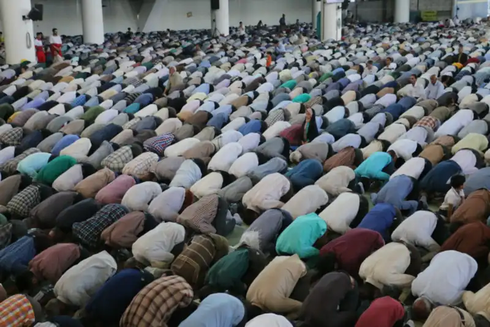
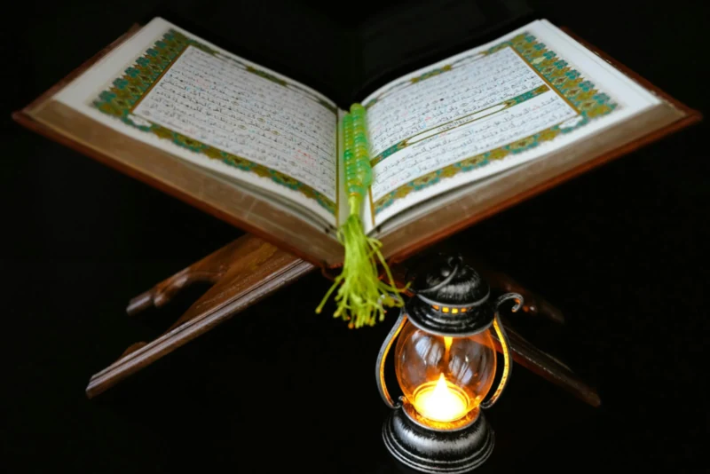
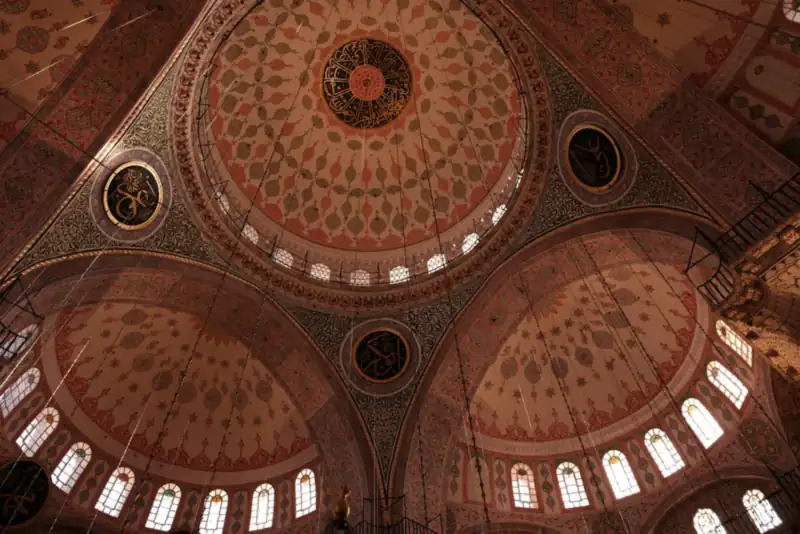
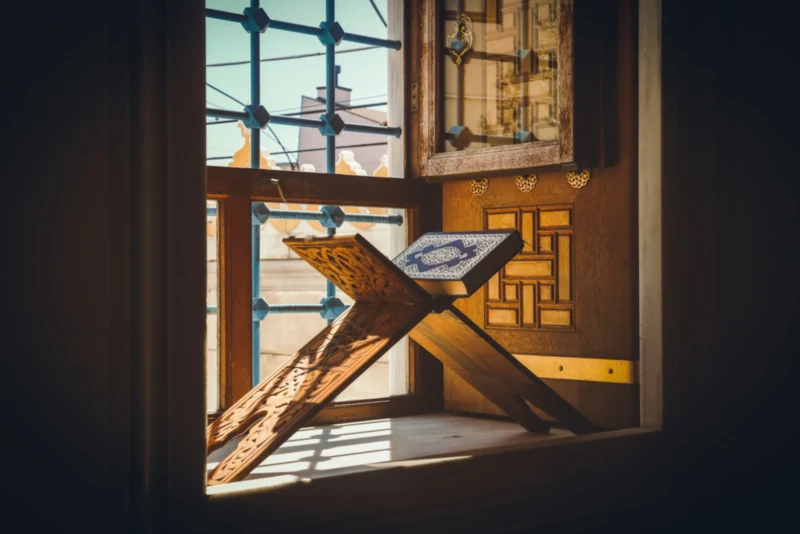
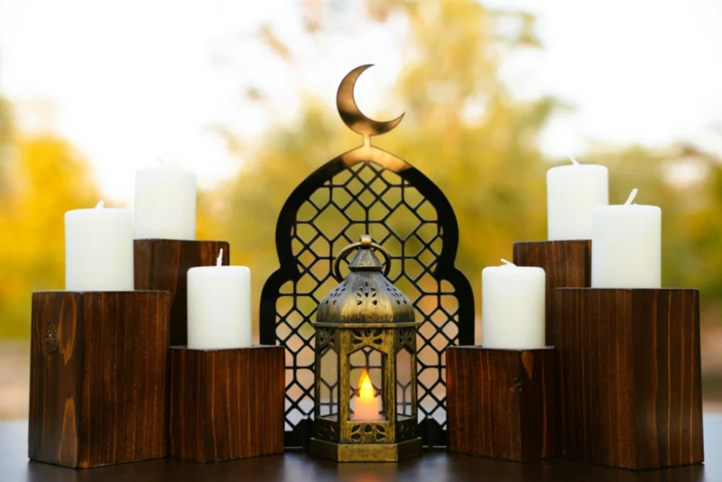
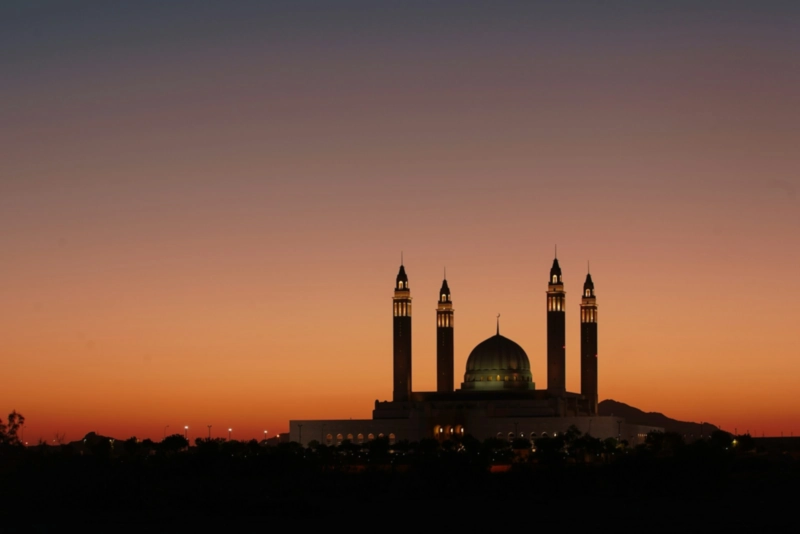
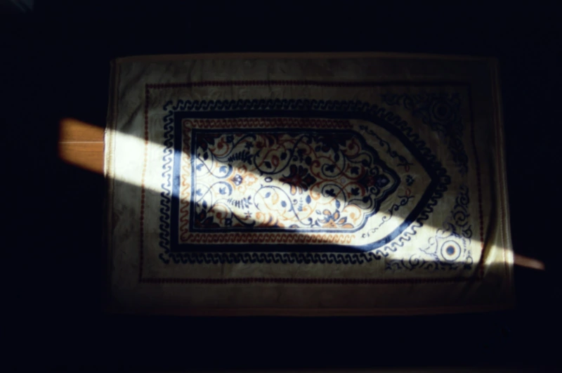

Programs & Services
Everything the masjid offers — from the five daily prayers to Qur’an classes, life-cycle services and pastoral care, for every stage of life.
Photo: E. Diop / Unsplash
Worship & community
A house of Allah, serving its community

Worship Prayer times & Jumu’ah Daily salah, three Jumu’ah congregations every Friday, and Eid and Ramadan prayers. See prayer times
Learning Qur’an, Arabic & Islamic studies Small-group classes for adults and children, from first letters to tafsir. About classes Youth Youth programs Halaqas, mentoring, sports and camps for teenagers and young adults. Find out more
Women Women’s programs Halaqa, book club, wellbeing circle and mothers’ group — plus a dedicated women’s prayer section. Find out more
New to Islam New-Muslim support Shahada assistance, foundational learning and a community that walks beside you — including free courses through our da’wah partner IntroToIslam. Get support
Life events Nikah (marriage) services Islamic marriage ceremonies conducted at the masjid, with pre-marital consultation. Enquire
Life events Janazah (funeral) services Ghusl, janazah salah and coordination with burial services, handled with dignity and care. Get help
Pastoral Counselling & chaplaincy Confidential support from the Imam and masjid volunteers. Make an appointment Support · with Ask ICV Find support Crisis, financial, health, legal, family and other support across Victoria, through the Islamic Council of Victoria. Find supportAt a glance
Every day, every Friday, every stage of life
5
Daily prayers
3
Jumu’ah congregations
2
Khutbah languages: Arabic & English
2006
Serving the west since
Not sure where to start?
Call the office — we’ll point you the right way.
Whether you need a class timetable, help arranging a nikah or janazah, or simply someone to talk to, the office can connect you with the right person.